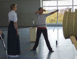
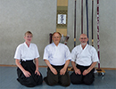

|  |  |  |
| Änderungen: | Aufgrund der Sarnierungsarbeiten in der Eisberghalle findet unser Training aktuell in der Hohenberger Halle statt.
Das Training entfällt vom 31.07. bis 14.09.2025 wegen der Hallenschließung in den Sommerferien. Das Training entfällt in den Winterferien vom 19.12.2025 bis 07.01.2026. |